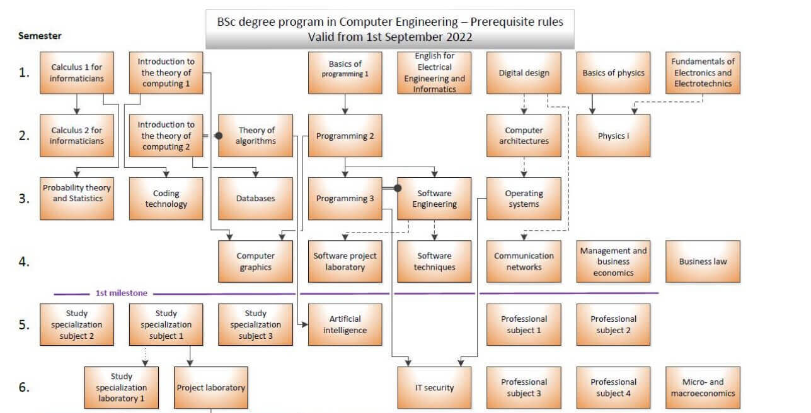
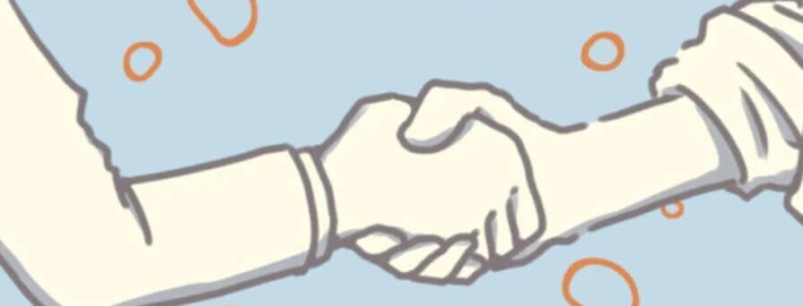

その私が、なぜハンガリーの大学でCS専攻を選んだのか。そして進学後、本当についていけたのか。
GPAの数字も含めて、全部書きます。
高校では文系選択。物理も数学Ⅲもプログラミングも、まったく学習してこなかった。
それでも、こう考えた。
この2つが揃えば、将来職に困ることはないだろう、と。
ちょっと単純な考えだったかもしれない。でも19歳の時点で、それより説得力のあるロジックは自分には作れなかった。
まず、私が入った Computer Science Engineering（CSE）専攻の履修構造を見てください。1〜4学期の主要科目はこの通りです。

| 学期 | 主要科目 |
|---|---|
| 1学期 | Calculus 1, Introduction to the theory of computing 1, Basics of programming 1, Digital design, Basics of physics, Fundamentals of Electronics, English for EE&Informatics |
| 2学期 | Calculus 2, Theory of computing 2, Theory of algorithms, Programming 2, Computer architectures, Physics I |
| 3学期 | Probability and Statistics, Coding technology, Databases, Programming 3, Software Engineering, Operating systems |
| 4学期 | Computer graphics, Software project laboratory, Software techniques, Communication networks, Management and business economics, Business law |
見てわかる通り、数学と物理が思いっきり土台にある。文系選択の高校生に一番きついのは、Physics だと思います。
| 学期 | 落とした科目 | GPA | 単位数 |
|---|---|---|---|
| 1学期 | なし（フル単） | 4.1 / 5.0 | 31単位 |
| 2学期 | Physics I | 3.5 / 5.0 | 27単位 |
| 3学期 | Software Engineering | 3.5 / 5.0 | 27単位 |
| 4学期 | なし（Physics I 再履修でフル単） | 3.7 / 5.0 | 51単位 |
悪くない数字。でも一つだけ後悔があります。C言語（Basics of Programming 1）は、渡航前に触っておくべきだった。
初学者がいきなり英語で C を学ぶのはハンデが大きすぎる。文法とポインタで詰まって、周りの経験者との差を感じました。ここから来る人には、C言語の学習を勧めます。
一発目の落単。文系選択で物理未経験の身には、Physics I はきつかった。
ただ、これは想定内。1つに絞って落としたのはむしろダメージコントロールとしてはうまくいった方でした。
聞くところによると、今年は約80%の学生が Software Engineering を落としたらしい。
大学側の問題もあった科目と信じたい。私だけじゃなかった、と後で知って少しホッとした。
2学期に落とした Physics I を再履修して、無事クリア。GPA 3.7。
ハンガリー語のテストでは先生が指さして記号問題の答えを教えてくれた（笑）
結論として、文系でも全然追いつけます。ただし、その分の努力は覚悟してください。
体感、1年目は浪人時代並みに勉強してた気がします。
「文系だから無理」ではない。「文系だから追加コスト（努力）がかかる」というのが正確。
本屋にある参考書、Udemyなんでもいい。文法とポインタの概念に一度触れておくだけで、1学期のスタートダッシュが全然違います。
遊びに来てるわけじゃない、と自分に言い聞かせる期間。2年目から余裕が出てきます。1年目で退学する人が結構いたり、単位を落としたりする人がいます。

同じ立場だった私だからこそ、
あなたの気持ちがわかります。